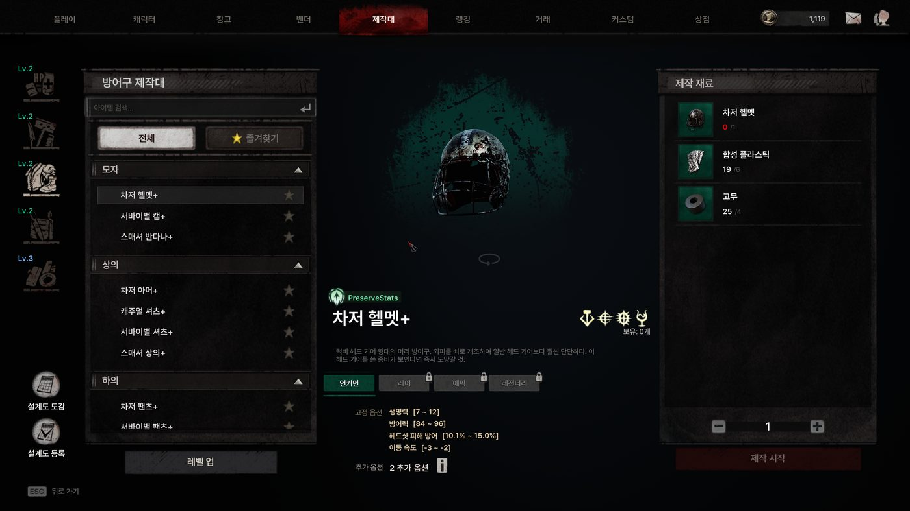
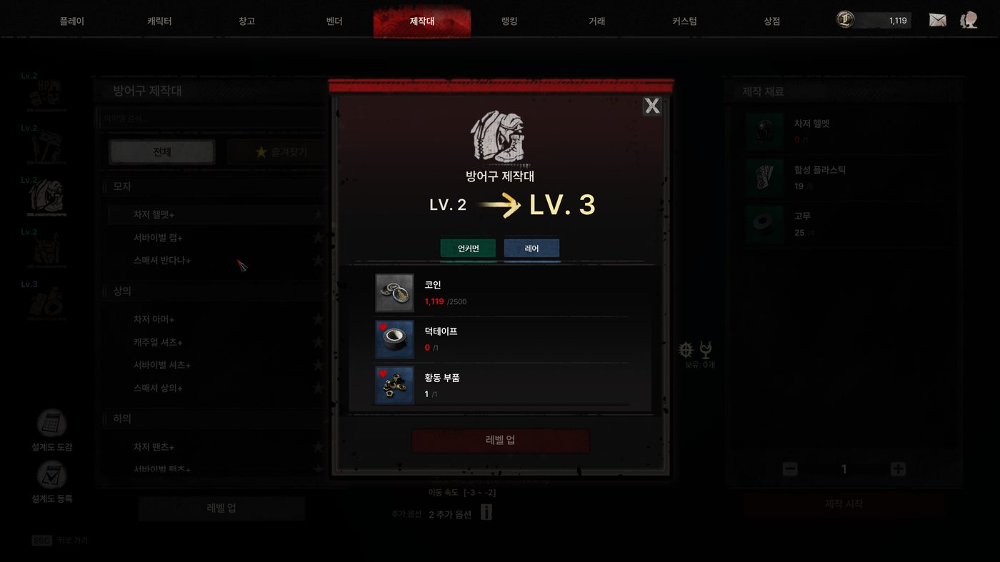
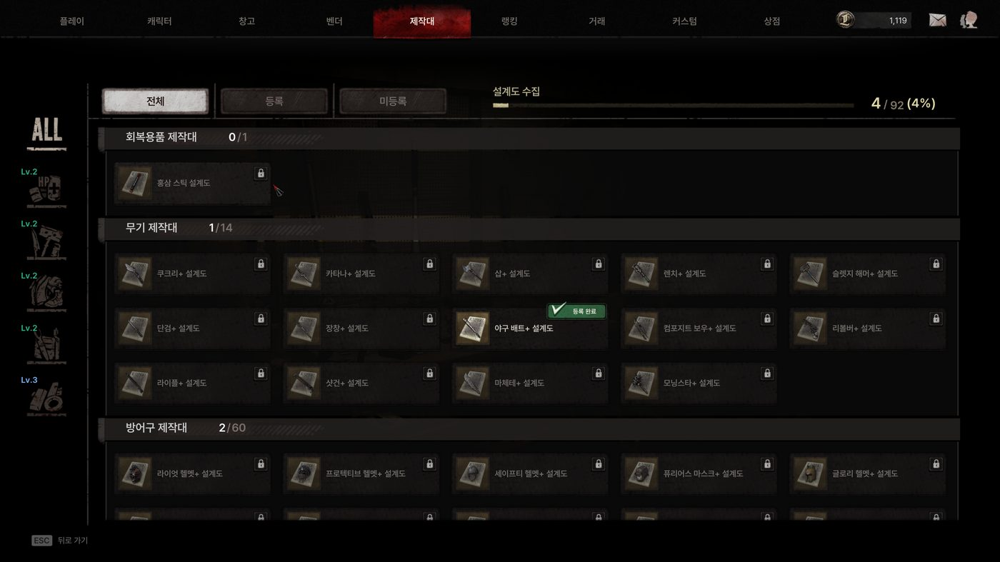

01 · 기획 산출물
제작대 리뉴얼 PRD
「The Midnight Walkers」(PC 좀비 익스트랙션 FPS)의 제작(Craft) 시스템 리뉴얼 기획입니다. 사내 기획서를 PRD 형식으로 다시 정리했고, 실제 수치와 사내 문서 링크는 뺐습니다.
역할
기획팀 팀장으로서 이 건을 직접 기획했습니다. 문제 정의, 규칙과 데이터 테이블 설계, 화면 구조 기획, 클릭해 볼 수 있는 프로토타입 제작, 다국어 텍스트 키 정리와 최종 목록 확정까지 맡았습니다.
배경과 문제 정의
| 해결하려던 문제 | 설계 방향 |
|---|---|
| 제작대가 아이템을 만드는 기능으로만 쓰여, 파밍과 성장을 이어주는 역할을 하지 못함 | 파밍 목적, 수집, 거래 요소를 결합하고, 제작대 자체가 잠금 해제와 레벨업으로 성장하는 구조로 개편 |
| 모든 장비를 직접 제작하는 구조라 인게임 파밍(획득)과 제작의 목적이 겹침 | "보유 장비 강화"로 전환해 파밍은 획득, 제작대는 강화로 역할을 분리 |
| 상위 장비를 목표로 삼을 장기 동기가 부족함 | 설계도 수집과 등록 시스템, 도감으로 장기 수집 목표 제공 |
| 시간 투자가 큰 콘텐츠를 캐릭터별로 나누면, 여러 캐릭터를 플레이하는 장점이 오히려 단점이 됨 | 제작대 해금과 설계도 수집을 계정 단위로 공유 (게임 내 첫 계정 공유 사례) |
사용자 스토리와 수용 조건
-
스토리 1플레이어로서, 필요한 장비 종류에 맞는 제작대를 골라 쓰고 싶다.
- 수용 조건: 제작대는 5종(회복, 무기, 방어구, 유틸리티, 재료)이며, 어떤 제작대에 어떤 레시피가 속하는지는 데이터로 설정한다.
-
스토리 2플레이어로서, 재료를 모아 제작대를 해금하고 성장시켜 더 높은 등급의 장비를 만들고 싶다.
- 수용 조건: 초기에는 회복 제작대만 해금 상태이고 나머지는 재료를 모아 잠금 해제한다. 제작대는 Lv.1~5이며, 레벨이 오르면 제작 가능한 최대 등급이 확장되어 해당 등급 이하를 모두 제작할 수 있다.
-
스토리 3플레이어로서, 설계도를 얻으면 등록해 새 레시피를 계속 쓰고, 수집 현황을 한눈에 보고 싶다.
- 수용 조건: 설계도는 등록 시 인벤토리에서 소모되고 해당 레시피가 영구 해금된다. 도감은 전체, 등록, 미발견 탭으로 상태를 보여준다.
-
스토리 4플레이어로서, 제작을 기다리지 않고 바로 결과를 받고 싶다.
- 수용 조건: 제작은 대기열과 제작 시간 없이 즉시 완료되고, 결과물은 창고로 지급된다. 재화 비용 없이 아이템 재료만 사용하며, 즉시성은 2단계 연출(타격, 완성)로 보완한다.
-
스토리 5플레이어로서, 캐릭터를 바꿔도 제작대 해금과 설계도 수집 진행을 이어가고 싶다.
- 수용 조건: 제작대 해금과 설계도 수집은 계정 단위로 저장되어 같은 계정의 모든 캐릭터가 공유한다.
-
스토리 6플레이어로서, 해금이나 레벨업이 가능해졌을 때 놓치지 않고 알고 싶다.
- 수용 조건: 미등록 설계도, 해금 가능, 레벨업 가능 중 하나라도 해당하면 진입점에 알림(레드닷)을 표시한다.
유저 플로우
제작
제작대 선택5종 카드, 잠금 · 해금 가능 · 해금 상태 표시
→
잠금 해제 확인재료를 모았을 때만 진행
→
제작 화면카테고리 · 3D 프리뷰 · 재료 선택 (3단)
→
제작타격, 완성 2단계 연출, 즉시 완료
→
창고로 지급계정 단위 저장
성장
재료 모으기인게임 파밍
→
제작대 레벨업Lv.1~5, 성장 가능 상태 알림
→
제작 가능 최대 등급 확장해당 등급 이하 모두 제작 가능
설계도
설계도 획득인게임 파밍, 일일 미션
→
설계도 등록인벤토리에서 소모
→
레시피 영구 해금해당 제작대에서 제작 가능
→
설계도 도감전체 · 등록 · 미발견 탭
정책 정의
| 제작대 수 | 5종 (회복 / 무기 / 방어구 / 유틸리티 / 재료) |
| 초기 해금 | 회복 제작대만 기본 제공, 나머지는 재료를 모아 잠금 해제 |
| 최대 레벨 | Lv.5, 레벨이 오를수록 제작 가능한 최대 등급이 확장 |
| 제작 방식 | 즉시 제작 (대기열, 제작 시간 없음), 2단계 연출로 즉시성 보완 |
| 장비 재료 | 레시피당 1종 1개 사용, 스탯은 결과물에 항상 승계 |
| 설계도 | 등록 시 인벤토리에서 소모, 이후 해당 레시피 영구 해금 |
| 수령 위치 | 창고(Stash) 고정 지급 |
| 저장 범위 | 계정 단위 저장 (같은 계정의 모든 캐릭터가 공유) |
| 재화 비용 | 없음, 아이템 재료만으로 제작 |
데이터 구조
제작대 정의, 성장, 레시피, 재료를 테이블 6개로 나눴습니다. 덕분에 레시피와 소속 제작대를 코드 수정 없이 데이터로 바꿀 수 있습니다.
| 제작대 정의 | 제작대 종류, 초기 해금 여부, 최대 레벨 등 기본 정보 |
| 제작대 레벨 | 레벨별 요구 재료와 레벨업 시 확장되는 제작 가능 등급 |
| 제작 레시피 | 결과 아이템, 필요 재료(또는 설계도), 소속 제작대 |
| 통합 재료 | 잠금 해제, 레벨업, 제작에서 공통으로 쓰는 재료 묶음 (재화와 아이템 통합) |
| 재료 타입 열거형 | 재료가 재화인지 아이템인지 구분 |
| 공용 상수 | 재료 최대 종류 수 등 시스템 전역 설정값 |
설계 포인트
- 통합 재료 테이블 재사용: 잠금 해제, 레벨업, 제작이 각자 재료 테이블을 따로 갖지 않고,
WorkbenchMeterial하나를GroupId로 묶어 공유하도록 설계했습니다. 재료 구성을 바꿀 때 한 곳만 고치면 됩니다. - 서버, 클라이언트 필드 분리: 같은 테이블 안에서도 서버 로직에 필요한 필드와 클라이언트 표시 전용 필드(아이콘, 정렬 순서 등)를 구분해 표시했습니다.
- 교차 등급 제작: 레시피의 장비 재료 필드가 결과 아이템과 다른 등급을 참조할 수 있게 해, "낮은 등급 장비를 재료로 더 높은 등급 장비를 만드는" 요구를 데이터 구조에서부터 지원했습니다.
- 이름 조회 체인: 제작대 이름이든 아이템 이름이든 결국
String하나로 모이게 해, 다국어 처리를 일관되게 유지했습니다.
데이터 관계도
사내 기획서(DBML)를 바탕으로 테이블, 컬럼, 참조 관계를 재현했고, 실제 밸런스 수치와 사내 문서 링크는 넣지 않았습니다. dbdiagram.io의 임베드 뷰어로 그렸습니다. 관계도가 보이지 않으면 dbdiagram.io에서 열어 주세요.
의사결정 기록
| 단계 | 결정과 이유 |
|---|---|
| 초기 | 제작대별 레시피와 재료 구조를 설계하고, 클릭해 볼 수 있는 프로토타입으로 3단 레이아웃 제작 화면을 먼저 검증 |
| 변경 | 등급 범위(최소~최대) 방식을 "해당 등급 이하 모두 제작 가능"한 단일 최대 등급 방식으로 단순화. UI 표기도 범위 텍스트에서 등급 색상 뱃지로 변경 |
| 변경 | 3D 아이템 프리뷰를 고정 앵글에서 마우스 드래그로 회전하는 방식으로 바꾸고 프로토타입에 반영 |
| 변경 | 상단 진입점의 알림(레드닷) 표시 조건을 3가지로 정의해 성장 가능 상태를 놓치지 않도록 보완 |
| 정리 | 기획서 전반의 다국어 텍스트 키를 전수 점검해 중복과 누락을 정리하고 최종 목록 확정 |
| 결정 | 해금과 설계도 수집은 시간 투자가 큰 콘텐츠라 캐릭터별로 나누면 여러 캐릭터를 플레이하는 장점이 단점이 된다고 판단해, 계정 단위로 설계 |
컨셉 합의용 프로토타입
문서만으로 설명하기 어려운 3단 화면과 성장 흐름은 클릭해 볼 수 있는 프로토타입으로 보완했습니다. 개발 수준의 구현이 아니라 컨셉을 합의하기 위한 산출물이고, 직접 눌러 보며 규칙을 확인해 의사결정 기록에 반영했습니다.
주요 화면
제작대 선택 화면

제작 화면 (3단 레이아웃)

제작대 레벨업

설계도 도감
출시 후 결과
- 개편 후 유저의 평균 이탈 시점이 7일에서 18일로 늘어, 플레이 수명이 길어졌습니다.
- 커뮤니티와 디스코드에서 "할 거리가 늘어 플레이 동기가 살아났다"는 반응이 나와, 설계도 수집 요소가 의도대로 작동했다고 판단했습니다.
- 모든 장비를 직접 제작하던 구조를 "보유 장비 강화"로 바꾼 뒤, 아이템 옵션의 가치가 올라가고 파밍의 목적도 더 분명해졌습니다.